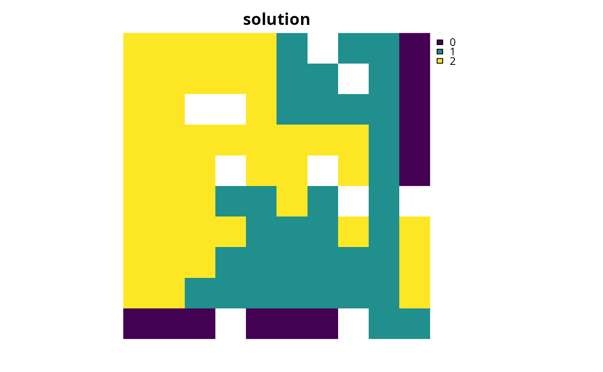

Add constraints to a conservation planning problem to ensure
that all selected planning units are spatially connected with each other
and form a single contiguous unit.
# S4 method for ConservationProblem,ANY,ANY add_contiguity_constraints(x, zones, data) # S4 method for ConservationProblem,ANY,data.frame add_contiguity_constraints(x, zones, data) # S4 method for ConservationProblem,ANY,matrix add_contiguity_constraints(x, zones, data)
Arguments
| x |
|
|---|---|
| zones |
|
| data |
|
Value
ConservationProblem-class object with the constraints
added to it.
Details
This function uses connection data to identify solutions that
form a single contiguous unit. In earlier versions of the
prioritizr package, it was known as the
add_connected_constraints function. It was inspired by the
mathematical formulations detailed in \"Onal and Briers (2006).
The argument to data can be specified in several ways:
NULLconnection data should be calculated automatically using the
connected_matrixfunction. This is the default argument. Note that the connection data must be manually defined using one of the other formats below when the planning unit data in the argument toxis not spatially referenced (e.g. indata.frameornumericformat).matrix,Matrixwhere rows and columns represent different planning units and the value of each cell indicates if the two planning units are connected or not. Cell values should be binary
numericvalues (i.e. one or zero). Cells that occur along the matrix diagonal have no effect on the solution at all because each planning unit cannot be a connected with itself.data.framecontaining the fields (columns)
"id1","id2", and"boundary". Here, each row denotes the connectivity between two planning units following the Marxan format. The fieldboundaryshould contain binarynumericvalues that indicate if the two planning units specified in the fields"id1"and"id2"are connected or not. This data can be used to describe symmetric or asymmetric relationships between planning units. By default, input data is assumed to be symmetric unless asymmetric data is also included (e.g. if data is present for planning units 2 and 3, then the same amount of connectivity is expected for planning units 3 and 2, unless connectivity data is also provided for planning units 3 and 2).
References
\"Onal H and Briers RA (2006) Optimal selection of a connected reserve network. Operations Research, 54: 379--388.
See also
Examples
# load data data(sim_pu_raster, sim_features, sim_pu_zones_stack, sim_features_zones) # create minimal problem p1 <- problem(sim_pu_raster, sim_features) %>% add_min_set_objective() %>% add_relative_targets(0.2) %>% add_binary_decisions() # create problem with added connected constraints p2 <- p1 %>% add_contiguity_constraints()# solve problems s <- stack(solve(p1), solve(p2))#> Optimize a model with 5 rows, 90 columns and 450 nonzeros #> Variable types: 0 continuous, 90 integer (90 binary) #> Coefficient statistics: #> Matrix range [2e-01, 9e-01] #> Objective range [2e+02, 2e+02] #> Bounds range [1e+00, 1e+00] #> RHS range [6e+00, 2e+01] #> Found heuristic solution: objective 4544.4850483 #> Presolve time: 0.00s #> Presolved: 5 rows, 90 columns, 450 nonzeros #> Variable types: 0 continuous, 90 integer (90 binary) #> Presolved: 5 rows, 90 columns, 450 nonzeros #> #> #> Root relaxation: objective 3.899056e+03, 12 iterations, 0.00 seconds #> #> Nodes | Current Node | Objective Bounds | Work #> Expl Unexpl | Obj Depth IntInf | Incumbent BestBd Gap | It/Node Time #> #> 0 0 3899.05601 0 4 4544.48505 3899.05601 14.2% - 0s #> H 0 0 3994.8945897 3899.05601 2.40% - 0s #> #> Explored 1 nodes (12 simplex iterations) in 0.00 seconds #> Thread count was 1 (of 4 available processors) #> #> Solution count 2: 3994.89 4544.49 #> #> Optimal solution found (tolerance 1.00e-01) #> Best objective 3.994894589653e+03, best bound 3.899056011987e+03, gap 2.3990% #> Optimize a model with 236 rows, 234 columns and 1202 nonzeros #> Variable types: 0 continuous, 234 integer (234 binary) #> Coefficient statistics: #> Matrix range [2e-01, 1e+00] #> Objective range [2e+02, 2e+02] #> Bounds range [1e+00, 1e+00] #> RHS range [1e+00, 2e+01] #> Presolve removed 12 rows and 13 columns #> Presolve time: 0.02s #> Presolved: 224 rows, 221 columns, 1022 nonzeros #> Variable types: 0 continuous, 221 integer (221 binary) #> Presolved: 224 rows, 221 columns, 1022 nonzeros #> #> #> Root relaxation: objective 3.947815e+03, 153 iterations, 0.00 seconds #> #> Nodes | Current Node | Objective Bounds | Work #> Expl Unexpl | Obj Depth IntInf | Incumbent BestBd Gap | It/Node Time #> #> 0 0 3947.81491 0 90 - 3947.81491 - - 0s #> 0 0 3950.02335 0 90 - 3950.02335 - - 0s #> 0 0 3969.69828 0 79 - 3969.69828 - - 0s #> 0 0 3972.75831 0 87 - 3972.75831 - - 0s #> 0 0 3972.97474 0 90 - 3972.97474 - - 0s #> 0 0 3981.94418 0 99 - 3981.94418 - - 0s #> 0 0 3982.02235 0 99 - 3982.02235 - - 0s #> 0 0 3983.14399 0 95 - 3983.14399 - - 0s #> 0 0 3983.14980 0 99 - 3983.14980 - - 0s #> 0 0 3983.14980 0 99 - 3983.14980 - - 0s #> H 0 0 4635.5438931 3983.14980 14.1% - 0s #> H 0 0 4278.9421311 3983.14980 6.91% - 0s #> #> Cutting planes: #> Gomory: 4 #> Zero half: 4 #> #> Explored 1 nodes (400 simplex iterations) in 0.15 seconds #> Thread count was 1 (of 4 available processors) #> #> Solution count 2: 4278.94 4635.54 #> #> Optimal solution found (tolerance 1.00e-01) #> Best objective 4.278942131084e+03, best bound 3.983149803117e+03, gap 6.9127%# plot solutions plot(s, main = c("basic solution", "connected solution"), axes = FALSE, box = FALSE)# create minimal problem with multiple zones, and limit the solver to # 30 seconds to obtain solutions in a feasible period of time p3 <- problem(sim_pu_zones_stack, sim_features_zones) %>% add_min_set_objective() %>% add_relative_targets(matrix(0.2, ncol = 3, nrow = 5)) %>% add_default_solver(time_limit = 30) %>% add_binary_decisions() # create problem with added constraints to ensure that the planning units # allocated to each zone form a separate contiguous unit z4 <- diag(3) print(z4)#> [,1] [,2] [,3] #> [1,] 1 0 0 #> [2,] 0 1 0 #> [3,] 0 0 1p4 <- p3 %>% add_contiguity_constraints(z4) # create problem with added constraints to ensure that the planning # units allocated to each zone form a separate contiguous unit, # except for planning units allocated to zone 2 which do not need # form a single contiguous unit z5 <- diag(3) z5[3, 3] <- 0 print(z5)#> [,1] [,2] [,3] #> [1,] 1 0 0 #> [2,] 0 1 0 #> [3,] 0 0 0p5 <- p3 %>% add_contiguity_constraints(z5) # create problem with added constraints that ensure that the planning # units allocated to zones 1 and 2 form a contiguous unit z6 <- diag(3) z6[1, 2] <- 1 z6[2, 1] <- 1 print(z6)#> [,1] [,2] [,3] #> [1,] 1 1 0 #> [2,] 1 1 0 #> [3,] 0 0 1p6 <- p3 %>% add_contiguity_constraints(z6)# solve problems s2 <- lapply(list(p3, p4, p5, p6), solve)#> Optimize a model with 105 rows, 270 columns and 1620 nonzeros #> Variable types: 0 continuous, 270 integer (270 binary) #> Coefficient statistics: #> Matrix range [2e-01, 1e+00] #> Objective range [2e+02, 2e+02] #> Bounds range [1e+00, 1e+00] #> RHS range [1e+00, 2e+01] #> Found heuristic solution: objective 13103.242827 #> Presolve time: 0.00s #> Presolved: 105 rows, 270 columns, 1620 nonzeros #> Variable types: 0 continuous, 270 integer (270 binary) #> Presolved: 105 rows, 270 columns, 1620 nonzeros #> #> #> Root relaxation: objective 1.199145e+04, 211 iterations, 0.01 seconds #> #> Nodes | Current Node | Objective Bounds | Work #> Expl Unexpl | Obj Depth IntInf | Incumbent BestBd Gap | It/Node Time #> #> 0 0 11991.4483 0 18 13103.2428 11991.4483 8.48% - 0s #> #> Explored 1 nodes (211 simplex iterations) in 0.02 seconds #> Thread count was 1 (of 4 available processors) #> #> Solution count 1: 13103.2 #> #> Optimal solution found (tolerance 1.00e-01) #> Best objective 1.310324282660e+04, best bound 1.199144828715e+04, gap 8.4849% #> Optimize a model with 801 rows, 705 columns and 3888 nonzeros #> Variable types: 0 continuous, 705 integer (705 binary) #> Coefficient statistics: #> Matrix range [2e-01, 1e+00] #> Objective range [2e+02, 2e+02] #> Bounds range [1e+00, 1e+00] #> RHS range [1e+00, 2e+01] #> Presolve removed 63 rows and 63 columns #> Presolve time: 0.08s #> Presolved: 738 rows, 642 columns, 3270 nonzeros #> Variable types: 0 continuous, 642 integer (642 binary) #> Presolved: 738 rows, 642 columns, 3270 nonzeros #> #> #> Root relaxation: objective 1.207868e+04, 759 iterations, 0.03 seconds #> #> Nodes | Current Node | Objective Bounds | Work #> Expl Unexpl | Obj Depth IntInf | Incumbent BestBd Gap | It/Node Time #> #> 0 0 12078.6848 0 231 - 12078.6848 - - 0s #> 0 0 12085.5969 0 257 - 12085.5969 - - 0s #> 0 0 12085.7681 0 262 - 12085.7681 - - 0s #> 0 0 12088.9462 0 248 - 12088.9462 - - 0s #> 0 0 12089.1978 0 250 - 12089.1978 - - 0s #> 0 0 12089.7212 0 260 - 12089.7212 - - 0s #> 0 0 12089.7376 0 257 - 12089.7376 - - 0s #> 0 0 12090.1799 0 298 - 12090.1799 - - 0s #> 0 0 12090.1799 0 299 - 12090.1799 - - 0s #> 0 0 12090.2511 0 296 - 12090.2511 - - 0s #> 0 0 12090.2511 0 294 - 12090.2511 - - 0s #> H 0 0 13856.404837 12090.2511 12.7% - 0s #> H 0 0 13662.186061 12090.2511 11.5% - 0s #> 0 2 12090.2753 0 294 13662.1861 12090.2753 11.5% - 0s #> H 136 102 13661.727830 12096.6026 11.5% 97.4 1s #> H 416 251 13643.594670 12098.8123 11.3% 61.0 2s #> 530 305 12193.9880 12 308 13643.5947 12099.7549 11.3% 59.9 5s #> H 721 355 13640.493193 12100.3421 11.3% 72.0 7s #> H 748 345 13439.694258 12100.3421 10.0% 71.9 8s #> #> Cutting planes: #> Gomory: 10 #> Cover: 1 #> Inf proof: 1 #> Zero half: 25 #> #> Explored 748 nodes (54995 simplex iterations) in 8.08 seconds #> Thread count was 1 (of 4 available processors) #> #> Solution count 6: 13439.7 13640.5 13643.6 ... 13856.4 #> #> Optimal solution found (tolerance 1.00e-01) #> Best objective 1.343969425777e+04, best bound 1.210034205036e+04, gap 9.9656% #> Optimize a model with 569 rows, 560 columns and 3132 nonzeros #> Variable types: 0 continuous, 560 integer (560 binary) #> Coefficient statistics: #> Matrix range [2e-01, 1e+00] #> Objective range [2e+02, 2e+02] #> Bounds range [1e+00, 1e+00] #> RHS range [1e+00, 2e+01] #> Presolve removed 43 rows and 42 columns #> Presolve time: 0.05s #> Presolved: 526 rows, 518 columns, 2717 nonzeros #> Variable types: 0 continuous, 518 integer (518 binary) #> Presolved: 526 rows, 518 columns, 2717 nonzeros #> #> #> Root relaxation: objective 1.204897e+04, 503 iterations, 0.02 seconds #> #> Nodes | Current Node | Objective Bounds | Work #> Expl Unexpl | Obj Depth IntInf | Incumbent BestBd Gap | It/Node Time #> #> 0 0 12048.9738 0 123 - 12048.9738 - - 0s #> 0 0 12064.8593 0 211 - 12064.8593 - - 0s #> 0 0 12064.9819 0 190 - 12064.9819 - - 0s #> 0 0 12065.2489 0 186 - 12065.2489 - - 0s #> 0 0 12066.9152 0 202 - 12066.9152 - - 0s #> 0 0 12067.5818 0 194 - 12067.5818 - - 0s #> 0 0 12067.7677 0 192 - 12067.7677 - - 0s #> 0 0 12067.7756 0 193 - 12067.7756 - - 0s #> 0 0 12067.7756 0 192 - 12067.7756 - - 0s #> H 0 0 13307.944105 12067.7756 9.32% - 0s #> #> Cutting planes: #> Gomory: 5 #> Clique: 3 #> Zero half: 6 #> #> Explored 1 nodes (839 simplex iterations) in 0.36 seconds #> Thread count was 1 (of 4 available processors) #> #> Solution count 1: 13307.9 #> #> Optimal solution found (tolerance 1.00e-01) #> Best objective 1.330794410496e+04, best bound 1.206777559149e+04, gap 9.3190% #> Optimize a model with 945 rows, 850 columns and 4468 nonzeros #> Variable types: 0 continuous, 850 integer (850 binary) #> Coefficient statistics: #> Matrix range [2e-01, 1e+00] #> Objective range [2e+02, 2e+02] #> Bounds range [1e+00, 1e+00] #> RHS range [1e+00, 2e+01] #> Presolve removed 70 rows and 73 columns #> Presolve time: 0.13s #> Presolved: 875 rows, 777 columns, 3840 nonzeros #> Variable types: 0 continuous, 777 integer (777 binary) #> Presolve removed 122 rows and 0 columns #> Presolved: 753 rows, 777 columns, 3474 nonzeros #> #> #> Root relaxation: objective 1.207105e+04, 756 iterations, 0.05 seconds #> #> Nodes | Current Node | Objective Bounds | Work #> Expl Unexpl | Obj Depth IntInf | Incumbent BestBd Gap | It/Node Time #> #> 0 0 12071.0476 0 225 - 12071.0476 - - 0s #> 0 0 12083.8905 0 205 - 12083.8905 - - 0s #> 0 0 12085.2437 0 228 - 12085.2437 - - 0s #> 0 0 12086.4194 0 250 - 12086.4194 - - 0s #> 0 0 12086.7407 0 247 - 12086.7407 - - 0s #> 0 0 12086.8568 0 248 - 12086.8568 - - 0s #> 0 0 12087.0286 0 268 - 12087.0286 - - 0s #> 0 0 12087.0479 0 268 - 12087.0479 - - 0s #> 0 0 12087.0630 0 276 - 12087.0630 - - 0s #> 0 0 12087.0658 0 276 - 12087.0658 - - 0s #> 0 0 12087.4391 0 262 - 12087.4391 - - 0s #> 0 0 12087.4471 0 267 - 12087.4471 - - 0s #> 0 0 12087.4471 0 269 - 12087.4471 - - 0s #> 0 0 12087.4471 0 267 - 12087.4471 - - 0s #> 0 2 12087.4588 0 267 - 12087.4588 - - 0s #> H 93 80 14164.586220 12089.4302 14.7% 82.1 1s #> H 94 81 14163.215002 12089.4302 14.6% 81.3 1s #> H 174 95 13289.234965 12089.5796 9.03% 67.5 1s #> #> Cutting planes: #> Gomory: 7 #> Zero half: 12 #> #> Explored 174 nodes (13266 simplex iterations) in 1.67 seconds #> Thread count was 1 (of 4 available processors) #> #> Solution count 3: 13289.2 14163.2 14164.6 #> #> Optimal solution found (tolerance 1.00e-01) #> Best objective 1.328923496526e+04, best bound 1.208957962953e+04, gap 9.0273%s2 <- lapply(s2, category_layer) s2 <- stack(s2) # plot solutions plot(s2, axes = FALSE, box = FALSE, main = c("basic solution", "p4", "p5", "p6"))# create a problem that has a main "reserve zone" and a secondary # "corridor zone" to connect up import areas. Here, each feature has a # target of 30 % of its distribution. If a planning unit is allocated to the # "reserve zone", then the prioritization accrues 100 % of the amount of # each feature in the planning unit. If a planning unit is allocated to the # "corridor zone" then the prioritization accrues 40 % of the amount of each # feature in the planning unit. Also, the cost of managing a planning unit # in the "corridor zone" is 45 % of that when it is managed as the # "reserve zone". Finally, the problem has constraints which # ensure that all of the selected planning units form a single contiguous # unit, so that the planning units allocated to the "corridor zone" can # link up the planning units allocated to the "reserve zone" # create planning unit data pus <- sim_pu_zones_stack[[c(1, 1)]] pus[[2]] <- pus[[2]] * 0.45 print(pus)#> class : RasterStack #> dimensions : 10, 10, 100, 2 (nrow, ncol, ncell, nlayers) #> resolution : 0.1, 0.1 (x, y) #> extent : 0, 1, 0, 1 (xmin, xmax, ymin, ymax) #> coord. ref. : NA #> names : layer.1.1, layer.1.2 #> min values : 190.13276, 85.55974 #> max values : 215.86384, 97.13873 #># create biodiversity data fts <- zones(sim_features, sim_features * 0.4, feature_names = names(sim_features), zone_names = c("reserve zone", "corridor zone")) print(fts)#> #> #> #># create targets targets <- tibble::tibble(feature = names(sim_features), zone = list(zone_names(fts))[rep(1, 5)], target = cellStats(sim_features, "sum") * 0.3, type = rep("absolute", 5)) print(targets)#> # A tibble: 5 x 4 #> feature zone target type #> <chr> <list> <dbl> <chr> #> 1 layer.1 <chr [2]> 25.0 absolute #> 2 layer.2 <chr [2]> 9.36 absolute #> 3 layer.3 <chr [2]> 21.6 absolute #> 4 layer.4 <chr [2]> 12.8 absolute #> 5 layer.5 <chr [2]> 17.0 absolute# create zones matrix z7 <- matrix(1, ncol = 2, nrow = 2) print(z7)#> [,1] [,2] #> [1,] 1 1 #> [2,] 1 1# create problem p7 <- problem(pus, fts) %>% add_min_set_objective() %>% add_manual_targets(targets) %>% add_contiguity_constraints(z7) %>% add_binary_decisions()#> Optimize a model with 703 rows, 615 columns and 3172 nonzeros #> Variable types: 0 continuous, 615 integer (615 binary) #> Coefficient statistics: #> Matrix range [9e-02, 1e+00] #> Objective range [9e+01, 2e+02] #> Bounds range [1e+00, 1e+00] #> RHS range [1e+00, 2e+01] #> Presolve removed 48 rows and 47 columns #> Presolve time: 0.14s #> Presolved: 655 rows, 568 columns, 2764 nonzeros #> Variable types: 0 continuous, 568 integer (568 binary) #> Presolve removed 124 rows and 0 columns #> Presolved: 531 rows, 568 columns, 2392 nonzeros #> #> #> Root relaxation: objective 5.901727e+03, 150 iterations, 0.01 seconds #> #> Nodes | Current Node | Objective Bounds | Work #> Expl Unexpl | Obj Depth IntInf | Incumbent BestBd Gap | It/Node Time #> #> 0 0 5901.72702 0 53 - 5901.72702 - - 0s #> 0 0 5913.98713 0 46 - 5913.98713 - - 0s #> 0 0 5919.40015 0 75 - 5919.40015 - - 0s #> 0 0 5921.60017 0 75 - 5921.60017 - - 0s #> 0 0 5925.59490 0 77 - 5925.59490 - - 0s #> H 0 0 6482.8257651 5925.59490 8.60% - 0s #> #> Cutting planes: #> Gomory: 3 #> Zero half: 2 #> #> Explored 1 nodes (402 simplex iterations) in 0.21 seconds #> Thread count was 1 (of 4 available processors) #> #> Solution count 1: 6482.83 #> #> Optimal solution found (tolerance 1.00e-01) #> Best objective 6.482825765145e+03, best bound 5.925594897102e+03, gap 8.5955%# plot solutions plot(s7, "solution", axes = FALSE, box = FALSE)